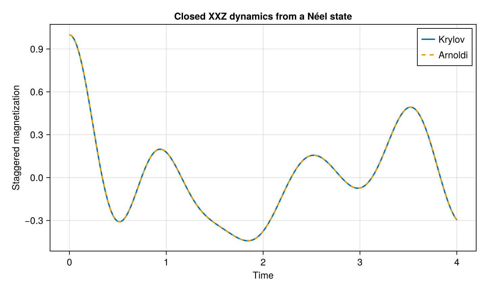

Closed XXZ Dynamics
The XXZ spin chain is a standard model for interacting quantum spins. In the absence of coupling to an environment, the system evolves unitarily under the Hamiltonian
\[H = \sum_{i<j} J_{ij} \left[ J_{xy} \left( \sigma_i^x \sigma_j^x + \sigma_i^y \sigma_j^y \right) + J_z \sigma_i^z \sigma_j^z \right].\]
In this example we use nearest-neighbor couplings and start from a Néel product state,
\[|\psi_0\rangle = |\uparrow\downarrow\uparrow\downarrow\cdots\rangle.\]
We monitor the staggered magnetization,
\[M_s = \frac{1}{N} \sum_{i=1}^{N} (-1)^{i-1}\sigma_i^z,\]
which is initially equal to one for this choice of Néel state.
The same dynamics are calculated with both the Krylov and Arnoldi methods.
Model
using OpenSpinDynamics
using SparseArrays
using CairoMakie
N = 6
coupling = NearestNeighborCoupling(
0.0,
N,
)
model = SpinModel(
N;
Jxy=1.0,
Jz=0.5,
coupling=coupling,
)Here $J_{xy}=1$ sets the transverse exchange scale and $J_z=0.5$ gives an anisotropic XXZ model.
Initial state and observable
ψ0 = neel_state(
N;
direction=:z,
)
ops = spin_operators(N)
Mstag = sum(
(-1)^(i - 1) * ops.z[i]
for i in 1:N
) / N
times = collect(
range(0.0, 4.0; length=161)
)The initial staggered magnetization is
real(ψ0' * Mstag * ψ0)1.0and should be equal to one.
Krylov evolution
The default closed-system backend is the Krylov propagator.
result_krylov = evolve(
model,
ψ0,
times,
[Mstag];
method=:krylov,
)Arnoldi evolution
The same problem can be evolved with the Arnoldi backend.
result_arnoldi = evolve(
model,
ψ0,
times,
[Mstag];
method=:arnoldi,
)The two methods should agree closely:
maximum(
abs.(
result_krylov[:, 1] .-
result_arnoldi[:, 1]
)
)4.490852134608758e-14Staggered magnetization
fig = Figure(size=(720, 430))
ax = Axis(
fig[1, 1];
xlabel="Time",
ylabel="Staggered magnetization",
title="Closed XXZ dynamics from a Néel state",
)
lines!(
ax,
times,
result_krylov[:, 1];
label="Krylov",
linewidth=2,
)
lines!(
ax,
times,
result_arnoldi[:, 1];
label="Arnoldi",
linestyle=:dash,
linewidth=2,
)
axislegend(ax)
fig
The staggered magnetization decreases from its initial value as the interacting spins evolve away from the Néel product state. The Krylov and Arnoldi curves provide an internal numerical cross-check for the closed-system evolution.